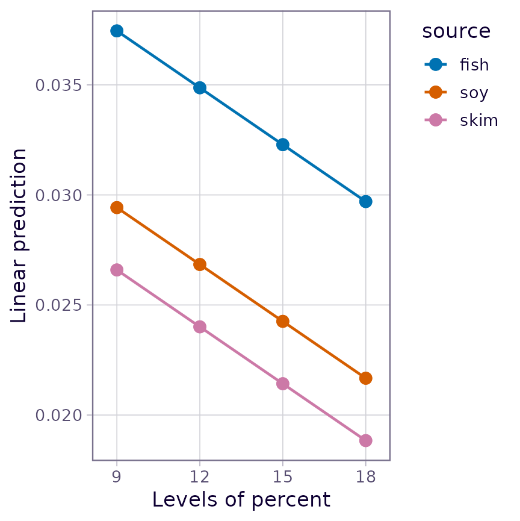
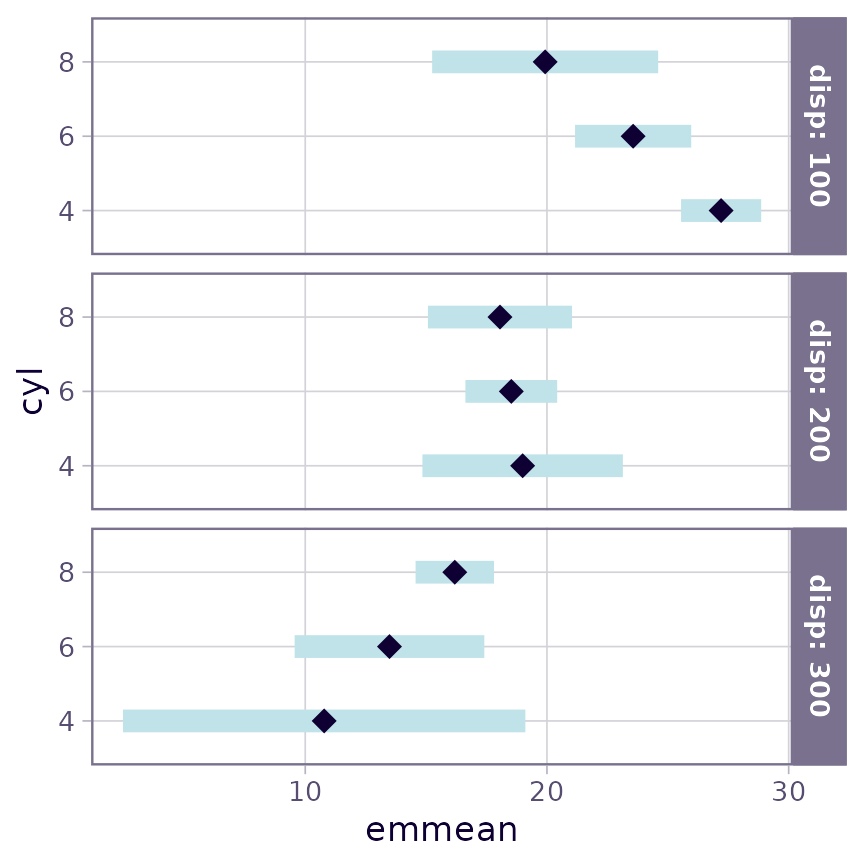

Basics of estimated marginal means
emmeans package, Version 1.11.1.1
Source:vignettes/basics.Rmd
basics.RmdContents
Foundations
Emphasis on experimental data
To start off with, we should emphasize that the underpinnings of estimated marginal means – and much of what the emmeans package offers – relate more to experimental data than to observational data. In observational data, we sample from some population, and the goal of statistical analysis is to characterize that population in some way. In contrast, with experimental data, the experimenter controls the environment under which test runs are conducted, and in which responses are observed and recorded. Thus with experimentation, the population is an abstract entity consisting of potential outcomes of test runs made under conditions we enforce, rather than a physical entity that we observe without changing it.
We say this because the default behavior of the
emmeans() function is to average groups together with equal
weights; this is common in analysis of experiments, but not common in
analysis of observational data; and I think that misunderstandings about
this underlie some criticisms such as are
found here and here.
Consider, for example, a classic Latin square experimental design. RA Fisher and others expounded on such designs. Suppose we want to compare four treatments, say fertilizers, in an agricultural experiment. A Latin square plan would involve dividing a parcel of land into four rows and four columns, defining 16 plots. Then we apply one of the fertilizers to each plot in such a way that each fertilizer appears once in each row and once in each column (and thus, each row and each column contains all four fertilizers). This scheme, to some extent, controls for possible spatial effects within the land parcel. To compare the fertilizer, we average together the response values (say, yield of a crop) observed on the four plots where each fertilizer was used. It seems right to average these together with equal weight, because each experimental condition seems equally valid and there is no reason to give one more weight than another. In this illustration, the fertilizer means are not marginal means of some physical population; they are simply the means obtained under the four test conditions defined by the experiment.
Emphasis on models
The emmeans package requires you to fit a model to your data. All the results obtained in emmeans rely on this model. So, really, the analysis obtained is really an analysis of the model, not the data. This analysis does depend on the data, but only insofar as the fitted model depends on the data. We use predictions from this model to compute estimated marginal means (EMMs), which will be defined more explicitly below. For now, there are two things to know:
- If you change the model, that changes the EMMs
- If the model fits poorly, the EMMs represent the data poorly (the garbage in, garbage out principle)
So to use this package to analyze your data, the most important first step is to fit a good model.
Illustration: pigs experiment
Consider the pigs dataset provided with the package
(help("pigs") provides details). These data come from an
experiment where pigs are given different percentages of protein
(percent) from different sources (source) in
their diet, and later we measured the concentration (conc)
of leucine. The percent values are quantitative, but we
chose those particular values deliberately, and (at least initially) we
want separate estimates at each percent level; that is, we
want to view percent as a factor, not a quantitative
predictor.
As discussed, our first task is to come up with a good model. Doing so requires a lot of skill, and we don’t want to labor too much over the details; you really need other references to deal with this aspect adequately. But we will briefly discuss five models and settle on one of them:
mod1 <- lm(conc ~ source * factor(percent), data = pigs)
mod2 <- update(mod1, . ~ source + factor(percent)) # no interactionThese models have \(R^2\) values of
0.808 and 0.700, and adjusted \(R^2\)
values of 0.684 and 0.634. mod1 is preferable to
mod2, suggesting we need the interaction term. However, a
residual-vs-predicted plot of mod2 has a classic “horn”
shape (curving and fanning out), indicating a situation where a response
transformation might help better than including the interaction.
It turns out that an inverse transformation, (1/conc)
really serves us well. (Perhaps this isn’t too surprising, as
concentrations are typically determined by titration, in which the
actual measurements are volumes; and these are reciprocally related to
concentrations, i.e., amounts per unit volume.)
So here are three more models:
mod3 <- update(mod1, inverse(conc) ~ .)
mod4 <- update(mod2, inverse(conc) ~ .) # no interaction
mod5 <- update(mod4, . ~ source + percent) # linear term for percent(Note: We could have used 1/conc as the response
variable, but emmeans provides an equivalent
inverse() function that will prove more advantageous
later.) The residual plots for these models look a lot more like a
random scatter of points (and that is good). The \(R^2\) values for these models are 0.818,
0.787, and 0.749, respectively; and the adjusted \(R^2\)s are 0.700, 0.740, and 0.719.
mod4 has the best adjusted \(R^2\) and will be our choice.
Estimated marginal means
Now that we have a good model, let’s use the emmeans()
function to obtain estimated marginal means (EMMs). We’ll explain them
later.
(EMM.source <- emmeans(mod4, "source"))## source emmean SE df lower.CL upper.CL
## fish 0.0337 0.000926 23 0.0318 0.0356
## soy 0.0257 0.000945 23 0.0237 0.0276
## skim 0.0229 0.000994 23 0.0208 0.0249
##
## Results are averaged over the levels of: percent
## Results are given on the inverse (not the response) scale.
## Confidence level used: 0.95
(EMM.percent <- emmeans(mod4, "percent"))## percent emmean SE df lower.CL upper.CL
## 9 0.0322 0.001030 23 0.0301 0.0344
## 12 0.0270 0.000969 23 0.0250 0.0290
## 15 0.0263 0.001100 23 0.0240 0.0286
## 18 0.0241 0.001340 23 0.0213 0.0268
##
## Results are averaged over the levels of: source
## Results are given on the inverse (not the response) scale.
## Confidence level used: 0.95Let’s compare these with the ordinary marginal means (OMMs) on
inverse(conc):
## fish soy skim
## 0.03331687 0.02632333 0.02372024## 9 12 15 18
## 0.03146170 0.02700341 0.02602757 0.02659336Both sets of OMMs are vaguely similar to the corresponding EMMs.
However, please note that the EMMs for percent form a
decreasing sequence, while the the OMMs decrease but then increase at
the end.
The reference grid, and definition of EMMs
Estimated marginal means are defined as marginal means of model predictions over the grid comprising all factor combinations – called the reference grid. For the example at hand, the reference grid is
(RG <- expand.grid(source = levels(pigs$source), percent = unique(pigs$percent)))## source percent
## 1 fish 9
## 2 soy 9
## 3 skim 9
## 4 fish 12
## 5 soy 12
## 6 skim 12
## 7 fish 15
## 8 soy 15
## 9 skim 15
## 10 fish 18
## 11 soy 18
## 12 skim 18To get the EMMs, we first need to obtain predictions on this grid:
## [,1] [,2] [,3] [,4]
## [1,] 0.03853514 0.03329091 0.03256404 0.03036586
## [2,] 0.03050486 0.02526063 0.02453376 0.02233558
## [3,] 0.02770292 0.02245869 0.02173182 0.01953364then obtain the marginal means of these predictions:
apply(preds, 1, mean) # row means -- for source## [1] 0.03368899 0.02565870 0.02285677
apply(preds, 2, mean) # column means -- for percent## [1] 0.03224764 0.02700341 0.02627654 0.02407836These marginal averages match the EMMs obtained earlier via
emmeans().
Now let’s go back to the comparison with the ordinary marginal means.
The source levels are represented by the columns of
pred; and note that each row of pred is a
decreasing set of values. So it is no wonder that the marginal means –
the EMMs for source – are decreasing. That the OMMs for
percent do not behave this way is due to the imbalance in
sample sizes:
## percent
## source 9 12 15 18
## fish 2 3 2 3
## soy 3 3 3 1
## skim 3 3 2 1This shows that the OMMs of the last column give most of the weight
(3/5) to the first source, which tends to have higher
inverse(conc), making the OMM for 18 percent higher than
that for 15 percent, even though the reverse is true with every level of
source. This kind of disconnect is an example of
Simpson’s paradox, in which a confounding factor can distort
your findings. The EMMs are not subject to this paradox, but the OMMs
are, when the sample sizes are correlated with the expected values.
In summary, we obtain a references grid of all factor combinations, obtain model predictions on that grid, and then the expected marginal means are estimated as equally-weighted marginal averages of those predictions. Those EMMs are not subject to confounding by other factors, such as might happen with ordinary marginal means of the data. Moreover, unlike OMMs, EMMs are based on a model that is fitted to the data.
More on the reference grid
In the previous section, we discussed the reference grid as being the
set of all factor combinations. It is slightly more complicated than
that when we have numerical predictors (AKA covariates) in the model. By
default, we use the average of each covariate – thus not enlarging the
number of combinations comprising the grid. Using the covariate
average(s) yields what are often called adjusted means. There
is one exception, though: if a covariate has only two different values,
we treat it as a factor having those two levels. For example, a model
could include an indicator variable male that is
1 if the subject is male, and 0 otherwise.
Then male would be viewed as a factor with levels
0 and 1. Note, again, that the reference grid
is formulated from the model we are using.
We can see a snapshot of the reference grid via the
ref_grid function; for example
(RG4 <- ref_grid(mod4))## 'emmGrid' object with variables:
## source = fish, soy, skim
## percent = 9, 12, 15, 18
## Transformation: "inverse"
ref_grid(mod5)## 'emmGrid' object with variables:
## source = fish, soy, skim
## percent = 12.931
## Transformation: "inverse"The reference grid for mod5 is different from that for
mod4 because in those models, percent is a
factor in mod4 and a covariate in mod5.
It is possible to modify the reference grid. In the context of the
present example, it might be interesting to compare EMMs based on
mod4 and mod5, and we can put them on an equal
footing by using the same percent values as reference
levels:
## 'emmGrid' object with variables:
## source = fish, soy, skim
## percent = 9, 12, 15, 18
## Transformation: "inverse"We could also have done this using
… which tells ref_grid() to set covariate levels using
unique values. It’s safer to use at because
cov.reduce affects all covariates instead of
specific ones. ###### {#emmip}
The two models’
predictions can be compared using interaction-style plots via the
emmip() function
emmip(RG4, source ~ percent, style = "factor")
emmip(RG5, source ~ percent, style = "factor")
Both plots show three parallel trends, because neither model includes an
interaction term; but of course for mod5, those trends are
straight lines.
Other topics
Passing arguments
Quite a few functions in the emmeans package,
including emmeans() and emmip(), can take
either a model object or a reference-grid object as their first
argument. Thus we can obtain EMMs for mod5 directly from
RG5, e.g.
emmeans(RG5, "source")## source emmean SE df lower.CL upper.CL
## fish 0.0336 0.000958 25 0.0316 0.0355
## soy 0.0255 0.000971 25 0.0235 0.0275
## skim 0.0227 0.001030 25 0.0206 0.0248
##
## Results are averaged over the levels of: percent
## Results are given on the inverse (not the response) scale.
## Confidence level used: 0.95These are slightly different results than we had earlier for
mod4. In these functions where the model and the reference
grid are interchangeable, the first thing the function does is to check
which it is; and if it is a model object, it constructs the reference
grid. When it does that, it passes its arguments to
ref_grid() in case they are needed. For instance, the above
EMMs could have been obtained using
It is a great convenience to be able to pass arguments to
ref_grid(), but it also can confuse new users, because if
we look at the help page for emmeans(), it does not list
at as a possible argument. It is mentioned, though, if you
look at the ... argument. So develop a habit of looking at
documentation for other functions, especially ref_grid(),
for other arguments that may affect your results.
Transformations
In our running example with pigs, by now you are surely
tired of seeing all the answers on the inverse(conc) scale.
What about estimating things on the conc scale? You may
have noticed that the inverse transformation has not been
forgotten; it is mentioned in the annotations below the
emmeans() output. [I’d also comment that having used
inverse(conc) rather than 1/conc as the
response variable in the model has made it easier to sort things out,
because inverse() is a named transformation that
emmeans() can work with.] We can back-transform the results
by specifying type = "response" in any function call where
it makes sense. For instance,
emmeans(RG4, "source", type = "response")## source response SE df lower.CL upper.CL
## fish 29.7 0.816 23 28.1 31.5
## soy 39.0 1.440 23 36.2 42.2
## skim 43.8 1.900 23 40.1 48.1
##
## Results are averaged over the levels of: percent
## Confidence level used: 0.95
## Intervals are back-transformed from the inverse scale
emmip(RG4, source ~ percent, type = "response")<img
src=“/home/runner/work/emmeans/emmeans/docs/articles/basics_files/figure-html/unnamed-chunk-16-1.png”
alt=“interaction-style plots for ‘RG4’ after back-transforming. Compared
to the plots of ‘RG4’ without back-transforming, these trends increase
rather than decrease (due to the inverse transformation) and they
fan-out somewhat as ‘percent’ increases. The values plotted here are
obtainable via ‘summary(RG4, type = “response”)’” width=“432” /> We
are now on the conc scale, and that will likely be less
confusing. Compared with the earlier plots in which the trends were
decreasing and parallel, this plot has them increasing (because of the
inverse relationship) and non-parallel. An interaction that occurs on
the response scale is pretty well explained by a model with no
interactions on the inverse scale.
Transformations have a lot of nuances, and we refer you to the vignette of transformations for more details.
Derived covariates
You need to be careful when one covariate depends on the value of
another. To illustrate using the datasets::mtcars data,
suppose we want to predict mpg using cyl
(number of cylinders) as a factor disp (displacement) as a
covariate, and include a quadratic term for disp. Here are
two equivalent models:
mcmod1 <- lm(mpg ~ factor(cyl) + disp + I(disp^2), data = mtcars)
mtcars <- transform(mtcars,
dispsq = disp^2)
mcmod2 <- lm(mpg ~ factor(cyl) + disp + dispsq, data = mtcars)These two models have exactly the same predicted values. But look at the EMMs:
emmeans(mcmod1, "cyl")## cyl emmean SE df lower.CL upper.CL
## 4 19.3 2.66 27 13.9 24.8
## 6 17.2 1.36 27 14.4 20.0
## 8 18.8 1.47 27 15.7 21.8
##
## Confidence level used: 0.95
emmeans(mcmod2, "cyl")## cyl emmean SE df lower.CL upper.CL
## 4 20.8 2.05 27 16.6 25.0
## 6 18.7 1.19 27 16.3 21.1
## 8 20.2 1.77 27 16.6 23.9
##
## Confidence level used: 0.95Wow! Those are really different results – even though the models are equivalent. Why is this – and which (if either) is right? To understand, look at the reference grids:
ref_grid(mcmod1)## 'emmGrid' object with variables:
## cyl = 4, 6, 8
## disp = 230.72
ref_grid(mcmod2)## 'emmGrid' object with variables:
## cyl = 4, 6, 8
## disp = 230.72
## dispsq = 68113For both models, the reference grid uses the disp mean
of 230.72. But for mcmod2, dispsq is a
separate covariate, and it is set to its mean of 68113. This is not
right, because it is impossible to have disp equal to
230.72 and its square equal to 68113 at the same time! If we use
consistent values of disp anddispsq, we get
the same results as for mcmod1:
## cyl emmean SE df lower.CL upper.CL
## 4 19.3 2.66 27 13.9 24.8
## 6 17.2 1.36 27 14.4 20.0
## 8 18.8 1.47 27 15.7 21.8
##
## Confidence level used: 0.95In summary, for polynomial models and others where some covariates
depend on others in nonlinear ways, it is definitely best to include
that dependence in the model formula (as in mcmod1) using
I() or poly() expressions, or alter the
reference grid so that the dependency among covariates is correct.
Non-predictor variables
Reference grids are derived using the variables in the right-hand side of the model formula. But sometimes, these variables are not actually predictors. For example:
If we call ref_grid() or emmeans() with
this model, it will try to construct a grid of values of
treat, x, and deg – causing an
error because deg is not a predictor in this model. To get
things to work correctly, you need to name deg in a
params argument, e.g.,
Graphical displays
The results of ref_grid() or emmeans()
(these are objects of class emmGrid) may be plotted in two
different ways. One we have already seen is an interaction-style plot,
using emmip().
The formula specification we used in
emmip(RG4, source ~ percent) sets the x variable
to be the one on the right-hand side and the “trace” factor (what is
used to define the different curves) on the left.
The other graphics option offered is the plot() method
for emmGrid objects. Let’s consider a different model for
the mtcars data with both cyl and
disp as covariates
mcmod3 <- lm(mpg ~ disp * cyl, data = mtcars)In the following, we display the estimates and 95% confidence
intervals for RG4 in separate panels for each
source.

This plot illustrates, as much as anything else, how silly it is to
try to predict mileage for a 4-cylinder car having high displacement, or
an 8-cylinder car having low displacement. The widths of the intervals
give us a clue that we are extrapolating. A better idea is to
acknowledge that displacement largely depends on the number of
cylinders. So here is yet another way to use cov.reduce to
modify the reference grid:
## disp cyl .wgt.
## 1 93.78673 4 1
## 2 218.98458 6 1
## 3 344.18243 8 1The ref_grid call specifies that disp
depends on cyl; so a linear model is fitted with the given
formula and its fitted values are used as the disp values –
only one for each cyl. If we plot this grid, the results
are sensible, reflecting what the model predicts for typical cars with
each number of cylinders:
plot(mcrg)Wizards with the ggplot2 package can further enhance these plots if they like. For example, we can add the data to an interaction plot – this time we opt to include confidence intervals and put the three sources in separate panels:
require("ggplot2")
emmip(mod4, ~ percent | source, CIs = TRUE, type = "response") +
geom_point(aes(x = percent, y = conc), data = pigs, pch = 2, color = "blue")Formatting results
If you want to include emmeans() results in a report,
you might want to have it in a nicer format than just the printed
output. We provide a little bit of help for this, especially if you are
using RMarkdown or SWeave to prepare the report. There is an
xtable method for exporting these results, which we do not
illustrate here but it works similarly to xtable() in other
contexts. Also, the export option the print()
method allows the user to save exactly what is seen in the printed
output as text, to be saved or formatted as the user likes (see the
documentation for print.emmGrid for details). Here is an
example using one of the objects above:
ci <- confint(mcrg, level = 0.90, adjust = "scheffe")
xport <- print(ci, export = TRUE)
cat("<font color = 'blue'>\n")
knitr::kable(xport$summary, align = "r")
for (a in xport$annotations) cat(paste(a, "<br>"))
cat("</font>\n")| disp | cyl | prediction | SE | df | lower.CL | upper.CL | |
|---|---|---|---|---|---|---|---|
| 93.8 | 4 | 27.7 | 0.858 | 28 | 25.5 | 30.0 | |
| 219.0 | 6 | 17.6 | 1.070 | 28 | 14.8 | 20.4 | |
| 344.2 | 8 | 15.4 | 0.692 | 28 | 13.5 | 17.2 |
Confidence level used: 0.9
Conf-level adjustment: scheffe method
with rank 3
Using weights
As we have mentioned, emmeans() uses equal weighting by
default, based on its foundations in experimental situations. When you
have observational data, you are more likely to use unequal weights that
more accurately characterize the population. Accordingly, a
weights argument is provided in emmeans(). For
example, using weights = "cells" in the call will weight
the predictions according to their cell frequencies (recall this
information is retained in the reference grid). This produces results
comparable to ordinary marginal means:
emmeans(mod4, "percent", weights = "cells")## percent emmean SE df lower.CL upper.CL
## 9 0.0315 0.001030 23 0.0293 0.0336
## 12 0.0270 0.000969 23 0.0250 0.0290
## 15 0.0260 0.001100 23 0.0238 0.0283
## 18 0.0266 0.001300 23 0.0239 0.0293
##
## Results are averaged over the levels of: source
## Results are given on the inverse (not the response) scale.
## Confidence level used: 0.95Note that, as in the ordinary marginal means we obtained long ago,
the highest estimate is for percent = 15 rather than
percent = 18. It is interesting to compare this with the
results for a model that includes only percent as a
predictor.
## percent emmean SE df lower.CL upper.CL
## 9 0.0315 0.00196 25 0.0274 0.0355
## 12 0.0270 0.00185 25 0.0232 0.0308
## 15 0.0260 0.00210 25 0.0217 0.0303
## 18 0.0266 0.00248 25 0.0215 0.0317
##
## Results are given on the inverse (not the response) scale.
## Confidence level used: 0.95The EMMs in these two tables are identical, so in some sense,
weights = "cells" amounts to throwing-out the uninvolved
factors. However, note that these outputs show markedly different
standard errors. That is because the model mod4 accounts
for variations due to source while mod6 does
not. The lesson here is that it is possible to obtain statistics
comparable to ordinary marginal means, while still accounting for
variations due to the factors that are being averaged over.
Multivariate responses
The emmeans package supports various multivariate
models. When there is a multivariate response, the dimensions of that
response are treated as if they were levels of a factor. For example,
the MOats dataset provided in the package has predictors
Block and Variety, and a four-dimensional
response yield giving yields observed with varying amounts
of nitrogen added to the soil. Here is a model and reference grid:
## 'emmGrid' object with variables:
## Block = VI, V, III, IV, II, I
## Variety = Golden Rain, Marvellous, Victory
## nitro = multivariate response levels: 0, 0.2, 0.4, 0.6So, nitro is regarded as a factor having 4 levels
corresponding to the 4 dimensions of yield. We can
subsequently obtain EMMs for any of the factors Block,
Variety, nitro, or combinations thereof. The
argument mult.name = "nitro" is optional; if it had been
excluded, the multivariate levels would have been named
rep.meas.
Objects, structures, and methods
The ref_grid() and emmeans() functions are
introduced previously. These functions, and a few related ones, return
an object of class emmGrid. From previously defined
objects:
class(RG4)## [1] "emmGrid"
## attr(,"package")
## [1] "emmeans"
class(EMM.source)## [1] "emmGrid"
## attr(,"package")
## [1] "emmeans"If you simply show these objects, you get different-looking results:
RG4## 'emmGrid' object with variables:
## source = fish, soy, skim
## percent = 9, 12, 15, 18
## Transformation: "inverse"
EMM.source## source emmean SE df lower.CL upper.CL
## fish 0.0337 0.000926 23 0.0318 0.0356
## soy 0.0257 0.000945 23 0.0237 0.0276
## skim 0.0229 0.000994 23 0.0208 0.0249
##
## Results are averaged over the levels of: percent
## Results are given on the inverse (not the response) scale.
## Confidence level used: 0.95This is based on guessing what users most need to see when displaying the object. You can override these defaults; for example to just see a quick summary of what is there, do
str(EMM.source)## 'emmGrid' object with variables:
## source = fish, soy, skim
## Transformation: "inverse"The most important method for emmGrid objects is
summary(). It is used as the print method for displaying an
emmeans() result. For this reason, arguments for
summary() may also be specified within most functions that
produce these kinds of results.emmGrid` objects. For
example:
# equivalent to summary(emmeans(mod4, "percent"), level = 0.90, infer = TRUE))
emmeans(mod4, "percent", level = 0.90, infer = TRUE)## percent emmean SE df lower.CL upper.CL t.ratio p.value
## 9 0.0322 0.001030 23 0.0305 0.0340 31.240 <.0001
## 12 0.0270 0.000969 23 0.0253 0.0287 27.872 <.0001
## 15 0.0263 0.001100 23 0.0244 0.0282 23.802 <.0001
## 18 0.0241 0.001340 23 0.0218 0.0264 18.009 <.0001
##
## Results are averaged over the levels of: source
## Results are given on the inverse (not the response) scale.
## Confidence level used: 0.9This summary() method for emmGrid objects)
actually produces a data.frame, but with extra bells and
whistles:
## [1] "summary_emm" "data.frame"This can be useful to know because if you want to actually
use emmeans() results in other computations, you
should save its summary, and then you can access those results just like
you would access data in a data frame. The emmGrid object
itself is not so accessible. There is a print.summary_emm()
function that is what actually produces the output you see above – a
data frame with extra annotations.
P values, “significance”, and recommendations
There is some debate among statisticians and researchers about the appropriateness of P values, and that the term “statistical significance” can be misleading. If you have a small P value, it only means that the effect being tested is unlikely to be explained by chance variation alone, in the context of the current study and the current statistical model underlying the test. If you have a large P value, it only means that the observed effect could plausibly be due to chance alone: it is wrong to conclude that there is no effect.
The American Statistical Association has for some time been advocating very cautious use of P values (Wasserstein et al. 2014) because it is too often misinterpreted, and too often used carelessly. Wasserstein et al. (2019) even goes so far as to advise against ever using the term “statistically significant”. The 43 articles it accompanies in the same issue of TAS, recommend a number of alternatives. I do not agree with all that is said in the main article, and there are portions that are too cutesy or wander off-topic. Further, it is quite dizzying to try to digest all the accompanying articles, and to reconcile their disagreeing viewpoints. I do agree with one frequent point: that there is really no substantive difference between \(P=.051\) and \(P=.049\), and that one should avoid making sweeping statements based on a hard cutoff at \(P=.05\) or some other value.
For some time I included a summary of Wasserstein et al.’s recommendations and their ATOM paradigm (Acceptance of uncertainty, Thoughtfulness, Openness, Modesty). But in the meantime, I have handled a large number of user questions, and many of those have made it clear to me that there are more important fish to fry in a vignette section like this. It is just a fact that P values are used, and are useful. So I have my own set of recommendations regarding them.
A set of comparisons or well-chosen contrasts is more useful and interpretable than an omnibus F test
F tests are useful for model selection, but don’t tell you anything specific about the nature of an effect. If F has a small P value, it suggests that there is some effect, somewhere. It doesn’t even necessarily imply that any two means differ statistically.
Use adjusted P values
When you run a bunch of tests, there is a risk of making too many type-I errors, and adjusted P values (e.g., the Tukey adjustment for pairwise comparisons) keep you from making too many mistakes. That said, it is possible to go overboard; and it’s usually reasonable to regard each “by” group as a separate family of tests for purposes of adjustment.
It is not necessary to have a significant F test as a prerequisite to doing comparisons or contrasts
… as long as an appropriate adjustment is used. There do exist rules such as the “protected LSD” by which one is given license to do unadjusted comparisons provided the \(F\) statistic is “significant.” However, this is a very weak form of protection for which the justification is, basically, “if \(F\) is significant, you can say absolutely anything you want.”
Get the model right first
Everything the emmeans package does is an
interpretation of the model that you fitted to the data. If the model is
bad, you will get bad results from emmeans() and other
functions. Every single limitation of your model, be it presuming
constant error variance, omitting interaction terms, etc., becomes a
limitation of the results emmeans() produces. So do a
responsible job of fitting the model. And if you don’t know what’s meant
by that…
Consider seeking the advice of a statistical consultant
Statistics is hard. It is a lot more than just running programs and copying output. We began this vignette by emphasizing we need to start with a good model; that is an artful task, and certainly what is shown here only hints at what is required; you may need help with it. It is your research; is it important that it be done right? Many academic statistics and biostatistics departments can refer you to someone who can help.
Summary of main points
- EMMs are derived from a model. A different model for the same data may lead to different EMMs.
- EMMs are based on a reference grid consisting of all combinations of factor levels, with each covariate set to its average (by default).
- For purposes of defining the reference grid, dimensions of a multivariate response are treated as levels of a factor.
- EMMs are then predictions on this reference grid, or marginal averages thereof (equally weighted by default).
- Reference grids may be modified using
ator other arguments forref_grid() - Reference grids and
emmeans()results may be plotted viaplot()(for parallel confidence intervals) oremmip()(for an interaction-style plot). - Be cautious with the terms “significant” and “nonsignificant”, and don’t ever interpret a “nonsignificant” result as saying that there is no effect.
- Follow good statistical practices such as getting the model right first, and using adjusted P values for appropriately chosen families of comparisons or contrasts.
References
Wasserstein RL, Lazar NA (2016) “The ASA’s Statement on p-Values: Context, Process, and Purpose,” The American Statistician, 70, 129–133, https://doi.org/10.1080/00031305.2016.1154108
Wasserstein RL, Schirm AL, Lazar, NA (2019) “Moving to a World Beyond ‘p < 0.05’,” The American Statistician, 73, 1–19, https://doi.org/10.1080/00031305.2019.1583913
Further reading
The reader is referred to other vignettes for more details and
advanced use. The strings linked below are the names of the vignettes;
i.e., they can also be accessed via
vignette("name", "emmeans")
- Models that are supported in emmeans (there are lots of them) “models”
- Confidence intervals and tests: “confidence-intervals”
- Often, users want to compare or contrast EMMs: “comparisons”
- Working with response transformations and link functions: “transformations”
- Multi-factor models with interactions: “interactions”
- Working with messy data and nested effects: “messy-data”
- Making predictions from your model: “predictions”
- Examples of more sophisticated models (e.g., mixed, ordinal, MCMC) “sophisticated”
- Utilities for working with
emmGridobjects: “utilities” - Frequently asked questions: “FAQs”
- Adding emmeans support to your package: “xtending”